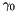
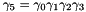
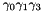
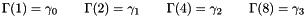

Spin Conventions
The following set of  -matrices are used in four dimensions:
-matrices are used in four dimensions:
![\[ \begin{array}{lccc} \gamma_0\quad\quad& \left(\begin{array}{rrrr} 0&0&0&i\\ 0&0&i&0\\ 0&-i&0&0\\ -i&0&0&0\\ \end{array}\right)\quad & \left(\begin{array}{rr} 0&i\sigma^1\\ -i\sigma^1&0 \end{array}\right)\quad\quad & -\sigma^2\!\otimes\!\sigma^1\\ \gamma_1\quad\quad& \left(\begin{array}{rrrr} 0&0&0&-1\\ 0&0&1&0\\ 0&1&0&0\\ -1&0&0&0\\ \end{array}\right)\quad & \left(\begin{array}{rr} 0&-i\sigma^2\\ i\sigma^2&0 \end{array}\right)\quad\quad & \sigma^2\!\otimes\!\sigma^2\\ \gamma_2\quad\quad& \left(\begin{array}{rrrr} 0&0&i&0\\ 0&0&0&-i\\ -i&0&0&0\\ 0&i&0&0\\ \end{array}\right)\quad & \left(\begin{array}{rr} 0&i\sigma^3\\ -i\sigma^3&0 \end{array}\right)\quad\quad & -\sigma^2\!\otimes\!\sigma^3\\ \gamma_3\quad\quad& \left(\begin{array}{rrrr} 0&0&1&0\\ 0&0&0&1\\ 1&0&0&0\\ 0&1&0&0\\ \end{array}\right)\quad & \left(\begin{array}{rr} 0&\mathbf{1}\\ \mathbf{1}&0 \end{array}\right)\quad\quad & \sigma^1\!\otimes\!1\\ \end{array} \]](form_23.png)
The basis is chiral. All the possible gamma matrix products are represented via
![\[ \Gamma(n) = \gamma_0^{n_0} \gamma_1^{n_1} \gamma_2^{n_2} \gamma_3^{n_3} \]](form_24.png)
where ni are single bit fields. Since  comes first the bit for it must come first.
So,  is represented as 1111b = 15d, and  is represented as 1011b = 11d (note the ordering). The conventional -matrices are

This enumeration is -basis independent.